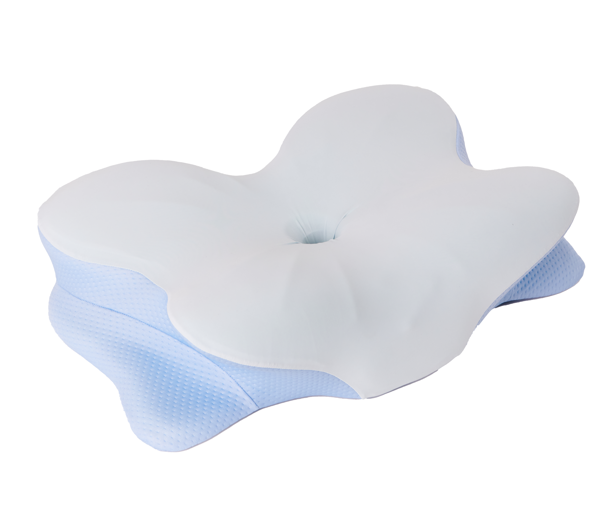
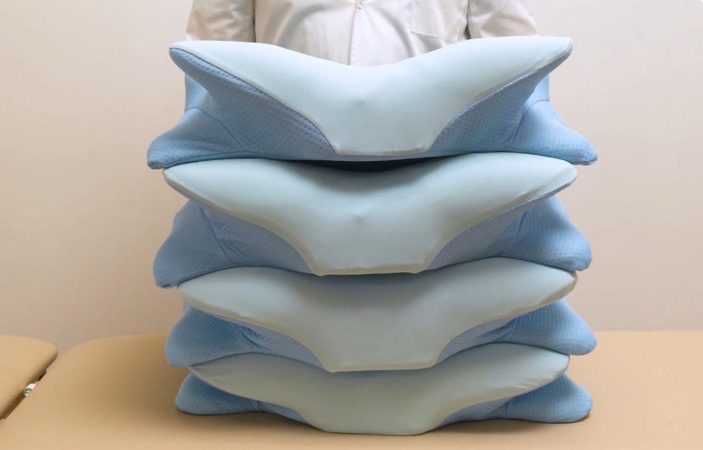
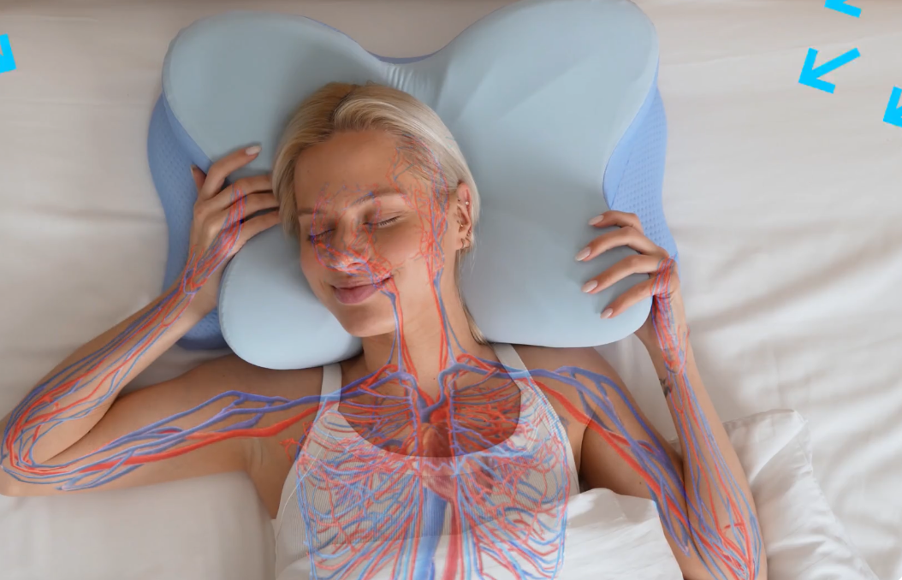

After 1,096 Nights in the Spare Room, an Odd German-Engineered Pillow Brought Me Back to My Husband’s Bed in Seven Nights
Strips, sprays, a custom mouthguard, even a CPAP machine — all of it failed. What finally softened my husband’s snoring was a contoured memory-foam pillow I nearly threw in the returns pile before opening.

It was a Sunday night in January 2023 when I carried my pillow down the hallway. There was no argument. No slammed door, no tears. I simply pulled the spare quilt out of the hall closet, made up the little bed in the spare room, and lay down on sheets that smelled faintly of cedar and old lavender.
The clock read 3:10 in the morning.
And I could still hear it through the wall. The noise that had become the background hum of my entire life — a deep, grinding, mechanical snore that seemed to travel through the drywall, up the bedframe, and straight into the skull of whoever was trying to sleep next to it.
My husband, Frank, has been the person I love most in the world since I was twenty-four. He is gentle. A steady father, a soft-hearted grandfather. He warms up my car on cold mornings, saves me the crossword, and once drove three hours in sleet to return the house keys I’d left at my sister’s.
And for the better part of ten years, the sound of him sleeping had been slowly wearing me down to nothing.
That Sunday was the night I finally stopped pretending I could keep going.
“Only for tonight,” I whispered to myself, tucking a strange blanket up under my chin.
That “only for tonight” stretched into 1,096 nights.
Three years.
Three years of falling asleep by myself down the hall from a man I adored, while he slept a dozen feet away on the far side of a single wall.
My name is Diane Marsh. I’m fifty-seven. I live in a quiet town in Ohio — one of those places where the woman at the post office knows your dog’s name. Frank and I have been married thirty-three years. We have two grown kids and a granddaughter, Nora, who is five and insists that I read her exactly three picture books every Sunday afternoon, in the same order, no substitutions.
I’m telling you all of this so you understand one thing: I am not someone who gives up. I raised two children while holding down a job at the township office. I sat with my father through his last two years. I bailed out a flooded basement three springs in a row without once calling it quits.
I am, by temperament, a woman who fixes things.
But I could not fix Frank’s snoring.
And here is what no one warns you about a problem like that — the slow kind, the kind that grinds you down one night at a time, one year after the next: it doesn’t stop at stealing your sleep.
It goes after your marriage.
Quietly. Courteously. While the two of you keep insisting to everyone, including yourselves, that everything is perfectly fine.
It didn’t begin this way. These things never do.
When Frank and I married back in 1992, he barely made a sound at night.
I still remember our honeymoon — a creaky little inn on Mackinac Island with a view of the water and floorboards that announced your every step. That first morning I woke before he did and just lay there watching him breathe. Slow. Steady. The kind of quiet that makes you finally understand what people mean by the word peace.
The snoring crept in somewhere in his late thirties. Barely anything at first — a low purr. A nudge and he’d turn over and it would stop. We’d tease each other about it the next morning over eggs.
Then his forties arrived.
The purr turned into a rumble. The rumble turned into a chainsaw. By the time he hit fifty, the sound coming off his side of the bed was like an old truck engine trying to turn over on a January morning.
It stopped being charming. It stopped being a joke we shared over coffee. It became the thing I dreaded the instant the nightstand lamp clicked off.
And here comes the part nobody prepares you for — the part that sneaks up on you:
I started keeping count.
Counting the hours of sleep I lost. Counting how many times a night I had to reach over and shake him awake (five, six, seven on a bad one). Counting the headaches that started arriving every afternoon like a scheduled train. Counting the minutes I’d sit in the parking lot before my shift because I was too wrung out to walk in.
On a good night I was getting, by my own honest estimate, somewhere around four hours of sleep.
For years on end.
The exhaustion was the part I saw coming.
What blindsided me was the resentment.
It seeped in slowly, the way water finds its way under a door. I’d lie awake at one in the morning, eyes fixed on the ceiling, and catch myself thinking things that frightened me.
How is he sleeping through this?
Does he even care that I’m falling apart?
If he really loved me, wouldn’t he do something?
And then I’d remember — he had done something. He’d tried plenty of things. (I’ll get to all of them.) None of them had held.
But at one in the morning, eyes stinging, the headboard practically humming with the noise, reason does not live inside your head.
Resentment lives there instead. And resentment, I’ve since learned, is one of the quietest ways a marriage rots from the inside.
We tried it all. And I do mean all of it.
Frank is not a man who looks away from a problem. When I finally broke down and told him — somewhere in the third year of the snoring — exactly how bad it had gotten, it wrecked him.
“Why didn’t you say something sooner?” he kept asking.
The truth was, I had been saying it. For years. He just hadn’t grasped what it was costing me until the morning he found me crying into a plate of cold eggs.
After that morning, Frank was a man on a mission.
First came the nasal strips. The little adhesive things from the pharmacy that stretch across the bridge of your nose. Frank wore one every single night for two months. For maybe the first hour they knocked the snoring down by a tenth — then his nose adjusted and the volume climbed right back to normal. Cost: about $32 a month. Result: I started buying earplugs by the box.
Then the throat sprays. Frank went through four different brands. One tasted like cough drops. One tasted like burnt licorice. Another, he swore, tasted “like the deep end of a public pool.” Each promised to coat the tissues in his throat and cut down the vibration. One worked for about a week before it left his throat raw. The others did nothing whatsoever.
Next, the custom mouthguard from the dentist. Fitted to his teeth. $520 out of our own pocket. The dentist walked us through slick little animations of how it slid the lower jaw forward to hold the airway open. Frank wore it for about six weeks. He couldn’t stand it. It left his jaw aching, gave him a faint overbite by morning, and had him drooling on the pillowcase like a teething toddler.
The snoring dropped a notch. Still loud enough to reach me through two foam earplugs.
So we went to an ENT. The specialist looked up Frank’s nose, peered down his throat, and sent him for a sleep study. We drove nearly forty miles to a clinic where he spent the night wired to a small forest of sensors. The verdict: moderate obstructive sleep apnea. The prescription: a CPAP machine.
Let me be crystal clear about what I’m about to say.
If a doctor has prescribed you a CPAP, please wear it. Sleep apnea is a genuine medical condition with real consequences, and CPAP is the gold-standard treatment for good reason. What follows is only our story. Frank’s story.
He gave it an honest try. He really did.
For nine nights he strapped on that mask. The first night he sounded like a scuba diver. The second night the seal broke and a jet of air whistled out the side and jolted us both awake near four. The third night the strap carved a red groove across his cheek that didn’t fade until lunchtime.
On the ninth night he sat bolt upright at 2 a.m., yanked the mask off, flung it across the room, and said:
“Diane. I can’t do this. I’d sooner snore myself into the grave than wear this contraption one more night.”
He went back to the ENT. They swapped him to a different mask — nasal pillows instead of the full-face kind. He managed three nights on that before his nostrils were so cracked and chapped they started to bleed.
The CPAP went into the closet, and there it stayed. (I looked, before writing this. There’s a thin coat of dust on the lid.)
And that was the week I moved into the spare room.
Three years of “a healthy arrangement”
Here’s the piece of this I wish I’d admitted to myself far sooner:
For most of those three years, I told myself it was fine.
I read the articles — there are a thousand of them out there — with upbeat headlines like “Why a ‘Sleep Divorce’ Might Be the Best Thing for Your Relationship.” There was always a sleep expert quoted saying that good rest matters more than old habits, and that couples who sleep in separate rooms often report being happier.
I held on to those articles the way someone going under holds on to a piece of floating wood.
And on the surface, our marriage looked completely ordinary. Frank and I had breakfast together every morning. We watched the evening news side by side. We took a walk after supper. We held hands in the produce aisle like a couple half our age.
But something had gone missing, and it took me a long while to name it.
Closeness.
Not only the physical kind — though yes, that faded too — but the quiet, accumulated closeness of two people who share a bed.
The way your hand finds a warm shoulder at three in the morning. The half-asleep, mumbled reminder about something before you both drift off. The morning one of you wakes up first and just watches the other for a moment before slipping out to start the coffee.
That’s three decades of tiny moments. And we’d simply stopped having them.
We had become — to borrow the phrase a counselor once used about some other couple — “polite roommates who happen to be married.”
I did not want to be polite roommates with the man I’d married.
I wanted my marriage back.
My sister-in-law sent me an article. I almost didn’t open it.
Denise is Frank’s older sister — a retired nurse, sixty-four, blunt in the way only retired nurses ever are.
She’d caught wind of my situation through the family. (My daughter Kaitlyn had let it slip on a phone call. Word travels fast in our family.)
One Saturday morning this past fall, Denise called me up.
“Diane. I’m going to send you something to read. And I want you to actually read it — not skim it and tell me you did.”
I sighed. By that point in this whole ordeal, every well-meaning tip landed like a small jab. Have you tried propping his head up? Have you tried cutting out dairy? Have you tried sewing a tennis ball into the back of his pajama top?
Yes. We’d done the tennis ball. (It did nothing. Frank just rolled onto his side and snored from a fresh angle.)
But Denise is family. So I promised I’d read it.
The article was about neck alignment and the position of the airway during sleep. It was, honestly, the first thing I’d ever read on the subject that didn’t read like an ad.
The idea was simple, and it made a kind of sense I’d never seen laid out anywhere before.
Most of us, the article explained, sleep on pillows built for one job: holding the head up. That’s the whole design. They’re soft. They feel lovely the second you flop down. But underneath, they’re just rectangles of fluff.
The trouble is what happens to your neck across the seven or eight hours you’re out cold.
If the pillow sits too high, your chin gets driven down toward your chest, which can pinch the airway at the back of the throat — the exact spot where a snore is loudest. If it sits too low, the head tips back and the jaw sags open, which can do the very same thing. And if the shape is wrong for the way you actually sleep, the neck ends up twisted in small, steady ways you never notice until you wake up stiff.
The article noted that some sleep specialists believe pillow ergonomics can genuinely factor into how comfortably a person breathes at night — not as a treatment for any diagnosed disorder, but as one contributor to how loudly and how often someone snores.
It wasn’t billed as a cure. It wasn’t a miracle. It was one piece of the puzzle that hardly anyone bothered to talk about.
And then, almost in passing, the article mentioned a German-engineered ergonomic pillow built specifically around this idea. It was called SomnaCurve.
I spent three hours reading about it that night
I am, by nature, wary of anything new. After everything we’d already burned money on, I’d developed a genuine allergy to any product that swore it would fix Frank’s snoring. So I did what any sensible, worn-out, fifty-seven-year-old wife would do. I sat at the kitchen table with my reading glasses and a mug of tea gone cold and I read.
I read the maker’s claims. I read the customer reviews. I read the comments underneath the customer reviews. I read the fine print and the disclaimers. I studied the thing from every angle.
Here’s what I came away with.


Now — and this matters — the SomnaCurve is not a medical device.
It makes no claim to treat sleep apnea. It makes no claim to cure snoring. In its own materials, the company is careful to describe it as a comfort and posture-support product, not a clinical treatment.
Which, frankly, is a big part of why I trusted it.
After years of being sold to by snore-gadget companies, I’ve learned one rule cold: the products that promise the most tend to deliver the least.
One detail is what finally decided it
That detail was this: 60 nights.
The SomnaCurve comes with a 60-night at-home sleep trial. If you don’t love it, you send it back for a full refund.
Sixty nights is a serious stretch of time. It’s long enough that you can’t fool yourself with a placebo. It’s long enough to tell whether a change is real or wishful. And it’s long enough that the company is essentially telling you: we’re betting you’ll keep it.
I’ve come to believe that any product willing to stake sixty nights of comfort against a full refund is a good deal more sure of itself than one that just stamps “satisfaction guaranteed” on the box.
So I ordered it.
It was a weeknight. The promotion running at the time was 70% off the usual price. I checked the shipping address three times before I clicked buy.
I didn’t say a word to Frank.
I’ll be honest: by that stage of our marriage, I’d dragged home so many failed snore gadgets that a tired little smile crossed his face every time a new box turned up. “Another one, huh?” he’d say, and I’d nod, and we’d both pretend to feel hopeful. I couldn’t bear that smile this time. I wanted to wait until I knew for sure.
The package showed up three days later.
I opened it in the bedroom while Frank was out at the hardware store. The pillow came rolled and vacuum-sealed, the way decent memory-foam things usually do. I cut the plastic and watched it slowly unfurl across the bed, taking shape like something quietly coming to.
It was firmer than my old pillow. Not hard — firm. The kind of firm that gives when you press and then fills slowly back in.
The contour along the lower edge was unmistakable. When I lay down on it, my neck dropped into the raised section like it had been waiting there all along. I sat up. I lay back on my side. The contour shifted with me, holding my neck without shoving my head too high. I rolled onto my stomach — my go-to position for the past forty years — and the head section was thin enough that my neck didn’t crank backward.
Huh. That was the entirety of my reaction. Huh.
I set the new pillow on Frank’s side of the bed. I made it up. I shut the bedroom door behind me and went down to start supper. And I said nothing.
What unfolded over the next seven nights
Frank spotted the new pillow the moment he sat down. “Is this new?” I told him yes, I’d ordered it, would he just give it a try and please not make a thing of it.
He shrugged and lay down. “Firmer than what I had.” Then, a beat later: “But my neck likes it.” I went off to the spare room like always, and lay in the dark, listening through the wall. The snoring started up about twenty minutes after his light went out.
I thought: Of course. Why did I imagine tonight would be any different? But here’s what caught me off guard — it was different. Quieter. Steadier. Less of that gasping, sawing edge. More like the heavy breathing of someone genuinely deep asleep. Still loud, I won’t pretend otherwise. But different. I dozed off to it and slept until six — nearly six straight hours, the longest run I’d had in years.
Same shape to it. The snoring was there, but softened, with stretches of near-silence I could pick out when the house was still. I took to leaving the spare-room door cracked so I could listen. It made me feel strange — like a teenager waiting to hear her parents come home.
Frank noticed the change before I ever mentioned it. On the morning after night four, he wandered into the kitchen, rubbed his eyes, and said:
“I might be imagining it. But I think I’m sleeping better.”
I asked him to explain. His neck felt looser in the mornings, he said. He wasn’t jolting himself awake coughing the way he used to. He felt — his word — “less cloudy.” I didn’t tell him I’d been listening at the wall.

I opened the spare-room door wider that night. I lay there listening, and at some point I realized I was holding my breath.
Through the wall I could hear Frank breathing. Heavy. Deep. But not loud.
I stayed like that for the better part of an hour, just listening. And then I cried, very softly, because I hadn’t heard my husband breathe like that since sometime in the late 1990s. I nearly got up and walked back to our room right then. I stood in the hallway in my robe with the pillow under my arm — the same way I’d walked the other direction three years before — and my nerve failed me. What if it’s a fluke? What if I go back and tonight’s the night it all comes roaring back? I returned to the spare room. I felt foolish. But I went back.
At supper I told Frank, with some effort, that I was thinking about coming back to our bed.
He set down his fork and looked at me for a long moment. “Diane.” He cleared his throat. “I’d like that.”
That night I carried my pillow down the hallway in the opposite direction. I closed the bedroom door behind me and lay down beside my husband for the first time in 1,096 nights. He reached over in the dark and took my hand. Neither of us said a thing. I fell asleep before he did, and woke at 6:30 — seven and a half hours, in my own bed, next to my own husband, for the first time since 2023. I didn’t cry. I just lay very still and listened to him breathe.
What made the difference, as best I can tell
I’m no sleep scientist. I’m a retired township clerk from Ohio. So please take everything below as one woman’s account of why this seemed to work in her house — not a medical claim of any kind.
The contour is the whole idea
Most pillows are rectangles. The SomnaCurve is shaped — with a raised ridge along the lower edge made to cradle the natural curve of the neck. When Frank lies on his back, it holds his neck level with his spine instead of letting his chin drop forward. His old pillow let the head pitch forward as the night wore on, closing off the airway. This one doesn’t. That single choice is why it works for him.
Support in any position
Frank is a back-and-side sleeper. He flips. He doesn’t mean to, but he flips. Most contoured pillows I’d looked at were built for one position — usually back — and turned into a punishment the second you rolled over. This one is shaped to work on your back, on your side, and even face-down.
Slow-response foam
This isn’t the bouncy kind of foam. It’s the slow kind — it compresses gradually under your head and eases back into shape when you shift. Cheap foams “remember” the wrong shape and go permanently dented within weeks. Slow-response viscoelastic holds up far longer.
Breathable cover, washable to 86°F
The cover is a light nylon-elastane blend — breathable and machine-washable. Frank sleeps warm, especially come summer, and this pillow doesn’t trap heat the way some memory-foam ones do. The cover unzips, goes in on cold, and hangs to dry.
Dust-mite resistant
Frank has mild seasonal allergies. The cover is treated to resist dust mites — a small thing, but it matters when you’ve got your face pressed to it eight hours a night.
The 60-night trial
Sixty nights. If it doesn’t work for you, you ship it back for a full refund. That’s a real guarantee — and it’s exactly why I felt fine ordering one without telling Frank. I knew that if it flopped, I could quietly return it and we’d be no worse off.
A one-time purchase — not another subscription
Unlike nasal strips ($32/month), throat sprays ($22/month), and the various app-based snore trackers with their monthly fees, the pillow is a single purchase and done. I added up what we’d spent on disposable snore products over the years and it was genuinely alarming. The pillow paid for itself in about four months — and it’s still sitting on Frank’s side of the bed eight months on.


How it measures up against what we’d already paid for
| SomnaCurve | Standard pillow | Wedge pillow | Anti-snore mouthguard | |
|---|---|---|---|---|
| Targets neck alignment | Yes, contoured | No | Partly | Jaw only |
| Works in multiple positions | Yes | Yes | Back only | Yes |
| Comfortable all night | Generally | Varies | Restrictive | Often sore jaw |
| Trial period | 60 nights | Varies | Varies | Usually none |
| Recurring cost | None | None | None | Replace 6–12 mo |
Comparison reflects general retail experience and Diane’s own household; actual pricing and features may vary. This is not a substitute for medical advice regarding a diagnosed sleep disorder.

What other couples have told me
After a first version of this essay went around, the emails started coming. A lot of them. From wives, from husbands, from the grown children of snorers. Here are a few I asked permission to share.
My husband and I had been doing the “separate rooms” thing for nearly three years. I was ashamed of it, but I was running on empty. I bought him this pillow mostly because I’d flat run out of ideas. It wasn’t an overnight thing — but by the second week his snoring was clearly softer, and I found myself staying in our room more nights than I left it. We’re back to sharing a bed full time now. It’s not perfect, but it’s our marriage again.
✓ Verified buyerI’m a side sleeper with chronic neck trouble going back to a fender-bender in 2009. I bought this more for the neck support than the snoring, honestly. My neck still aches some mornings — it’s no miracle worker — but I’ve stopped waking up at 4 a.m. because of it, and my wife says I’m quieter too. Four stars because nothing’s flawless, but it’s the best pillow I’ve owned.
✓ Verified buyerI’ve bought four anti-snore pillows over the years. Three were awful. One was okay for a month before it went flat as a pancake. This one’s firmer than I expected and took me about three nights to get used to, but the trial period meant I never felt pushed into keeping it. Eight weeks in and I’m a convert. My husband notices it most — says he wakes up far less often.
✓ Verified buyerStrict side sleeper here. Every pillow I’ve ever owned eventually flattens out overnight and leaves my neck cranked at some awful angle. This one keeps its shape. I wake up without that morning crick I’d just accepted as part of life. I can’t really speak to the snoring claim — my husband says I’m quieter but also that I was “already pretty quiet” — but for neck support, this is the genuine article.
✓ Verified buyerA few things I want to be straight with you about
If you’ve read this far, you’ve earned the unvarnished version.
Frank still snores some nights. Not every night, but some. When he’s had a glass of wine at dinner. When he ends up on his back instead of his side. When he’s fighting a cold. The pillow did not turn him into a silent sleeper.
What it did was drag the snoring from “sleeping next to a running engine” down to “sleeping next to a person who breathes deeply.” The first one is something you cannot live with. The second one is something you can.
It also took us a good ten days to adjust to the firmness. Frank needed about a week before he stopped remarking on how different it felt. I needed two weeks before I trusted the change was real and not just wishful thinking.
And one more thing: Frank’s sleep apnea diagnosis didn’t disappear. A pillow does not cure sleep apnea. After three months on the new pillow he went back to the ENT, and they offered him a different oral appliance. He’s weighing it. We’re still working on his sleep, the way you keep working at anything that matters.
If you or your partner has apnea or any other diagnosed sleep disorder, please — please — follow your doctor’s advice. A better pillow is not a stand-in for medical care.
But if you, like us, are worn thin — sleeping in separate rooms, out of ideas, watching your marriage grow quieter and more polite and emptier every year — this is one thing genuinely worth a try. Sixty nights, with a full refund if it doesn’t work, means the downside is small.
It’s mid-May now. We’ve shared the same bed every night since January.
I’m writing this at the kitchen table. Frank is out in the backyard staking up the trellis for the climbing roses our granddaughter Nora insisted we plant for her birthday. It’s a small thing, but it caught me this morning when I woke up:
The light came through our bedroom window. Frank was already awake, reading. He glanced over at me and said, “Morning, gorgeous,” the way he used to back in the nineties, before any of this began.
I can’t begin to explain how much I’d missed that small, ordinary moment. For three years, the first thing I saw every morning was the floral wallpaper in the spare room. Now it’s my husband’s face.
I’m not telling you this pillow is going to save your marriage. I’m not telling you it’s going to cure anything. I’m not telling you that what worked for Frank will work for whoever is sleeping — or not sleeping — beside you tonight.
What I am telling you is that I had given up.
I had honestly made peace with the idea that the best my marriage would ever be, from here on out, was the polite-roommates version. I’d grieved it. I’d moved on, the way you move on from things you can’t change.
And I was wrong.
If you’re lying awake right now, on the wrong side of a wall, listening to someone you love — if you’ve already given up — please don’t.
Sometimes the thing that fixes it is the last thing you’d ever guess. Sometimes it’s a pillow.
Diane M. Ohio · May 2026
Reader Responses
87 responsesReading this in bed at 1:40 a.m. with my husband sawing logs next to me. I’ve been “just for tonighting” the spare room for almost two years. Diane, this is my life. I’m ordering one first thing tomorrow. Thank you for writing this.
Kathy — you are far from alone. The number of women in exactly your spot would astonish you. Give it a couple of weeks and come back and tell us how it goes. Wishing you some real rest.
I’m the snorer. My wife forwarded me this. I’ll be honest, I felt called out reading the part about Frank — the CPAP I couldn’t tolerate twice, the dentist’s mouthguard that gave me jaw problems, all of it. We ordered the pillow last week. Three nights in. My wife says it’s clearly softer at the loud parts. I’m sleeping better too. I’ll check back at 30 days.
Question for anyone who’s actually tried it — I’m a strict side sleeper and I’ve had three contoured pillows that all swore they were made for side sleepers and were dreadful. Is this one honestly any different? My neck pain is real and I don’t want to waste another sixty nights.
Paula, side sleeper here, fourteen years of neck pain. The contour is shaped so the side of your face settles into the lower part while the raised edge props up the side of your neck. It took me four nights to fully adjust. Now I genuinely can’t go back. Not a miracle — just better.
Retired family physician here. I’d like to commend the author for being explicit that this is not a substitute for medical care for diagnosed apnea — that’s exactly the right note to strike. For mild positional snoring, though, neck alignment through an ergonomic pillow is one of the most under-discussed contributing factors. For a lot of patients it’s worth trying, in consultation with their physician, before anything more invasive.
The pillow felt pricey at first, until I added up what we’ve poured into snore strips, sprays, and that absurd $520 mouthguard from our dentist. We’ve been at this six years. I bought it with the 70% off promo, took advantage of the trial, and kept it. Worth every dollar. Wish we’d started here.
My husband uses CPAP every night, and I want to add this for anyone in the same boat: the pillow has been a gentle complement to his CPAP, not a replacement. He says the mask is actually easier to wear now, because the contour gives the headgear straps a place to rest without bunching. Small thing, but for CPAP users, a real one.
I cried reading Diane’s description of the years apart. I’ve been there for seven years. Seven. My husband doesn’t even know I cry about it sometimes. We’re going to try this. Whatever comes of it, thank you for writing the part about how the resentment grows. I thought I was a terrible person for feeling it. Now I know I’m just an exhausted one.
Ruth, you are not a terrible person. Sleep deprivation is a grief all its own. We’re thinking of you. Please come back and let us know how things turn out.
For anyone on the fence: the 60-night trial is the real deal. We tried it, my husband didn’t love the firmness (he likes a soft pillow), and we sent it back. The refund landed in eight days. No hassle, no return shipping on our end. So even if it’s not for you, you’re not stuck with it. That’s exactly why I felt fine telling my sister to give it a shot.